Bienvenue sur mon Portfolio
Étudiant en BUT Science des données. Apprenez-en plus sur moi, découvrez mes projets réalisés dans le cadre universitaire et extrascolaire
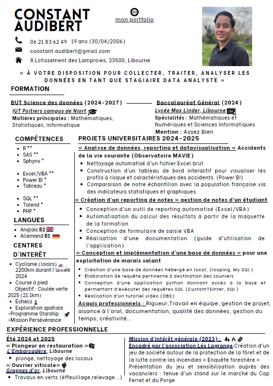
Aperçu du CV (Cliquer pour ouvrir)
À propos de moi
Je m'appelle Constant, j'ai 19 ans et je viens de Libourne, une ville du Sud-Ouest de la France. Actuellement, je poursuis mes études à Niort où je suis inscrit en BUT Science des Données.
Mon parcours scolaire
J’ai suivi un parcours scolaire classique avec un baccalauréat général, spécialités Mathématiques et NSI (Numérique et Sciences Informatiques). À la fin du lycée, j’ai longuement hésité entre une licence d’informatique et le BUT Sciences des Données. Mon intérêt pour les statistiques et, plus globalement, pour les sciences m’a naturellement orienté vers une formation mêlant informatique, mathématiques et analyse de données. L’aspect professionnalisant du BUT m’a convaincu : il correspond davantage à ma manière d’apprendre et à mes aspirations concrètes pour l’avenir.
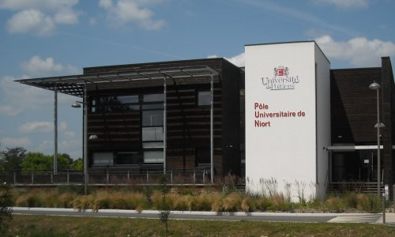
Mes expériences professionnelles
L’été 2024 a marqué mes premières expériences professionnelles, que j’ai vécues avec beaucoup d’enthousiasme. J’ai cumulé deux jobs saisonniers : ouvrier viticole, un métier typique de ma région libournaise, notamment autour de Saint-Émilion, et plongeur dans un restaurant nommé « L’Embarcadère ». J’ai adoré travailler cet été. Gagner mes premiers revenus, travailler pour moi-même, a été pour moi le début d’une certaine forme d’indépendance. Ces expériences m’ont appris la rigueur, l’endurance et le sens du service. J’aime travailler dur et faire de mon mieux pour répondre aux exigences des clients. Cela m’a donné encore plus de motivation pour continuer à m’investir dans mes projets, que ce soit personnels ou professionnels.
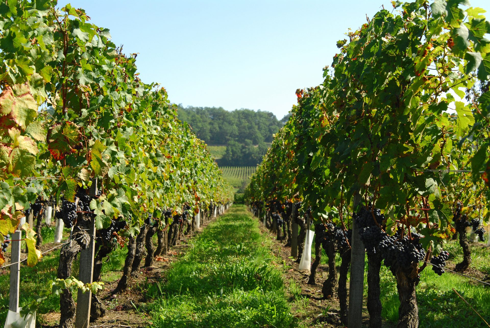
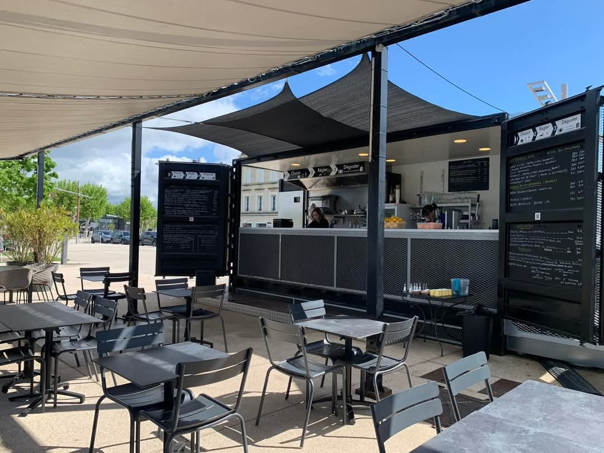
Mon activité préférée
C’est en 2021, lors du passage du Tour de France dans ma ville natale de Libourne, que j’ai véritablement découvert le cyclisme. J’ai été impressionné par l’ampleur de l’événement, par l’ambiance et par la performance des coureurs. Depuis ce jour, je me suis mis à m’y intéresser de plus en plus, jusqu’à en faire une véritable passion. Je pratique aujourd’hui le cyclisme en loisir, seul ou parfois avec des amis, pour le plaisir de l’effort et de la découverte. J’ai notamment réalisé le trajet Libourne-Bordeaux aller-retour, soit un peu plus de 100 km. Ce que j’aime dans ce sport, ce sont les valeurs qu’il véhicule : la persévérance, la rigueur, le respect et le dépassement de soi. J’essaie de retranscrire ces valeurs dans ma vie quotidienne, que ce soit dans mes études ou dans mes relations avec les autres.
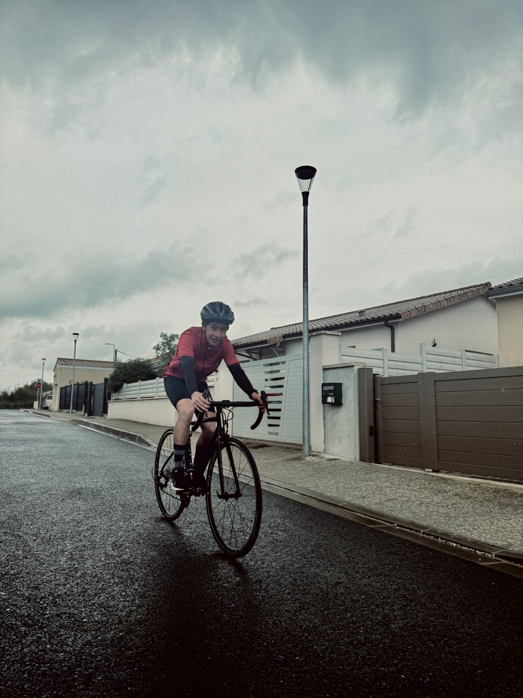
Mes Projets

Animation du jeu "Future of IA"
Projet de sensibilisation aux enjeux de l'intelligence artificielle et du numérique mené auprès d'élèves du lycée de la Venise Verte (Niort) en partenariat avec l'association Latitudes. Animation de 5 ateliers de 2H chacun. Travail de vulgarisation et de communication orale.
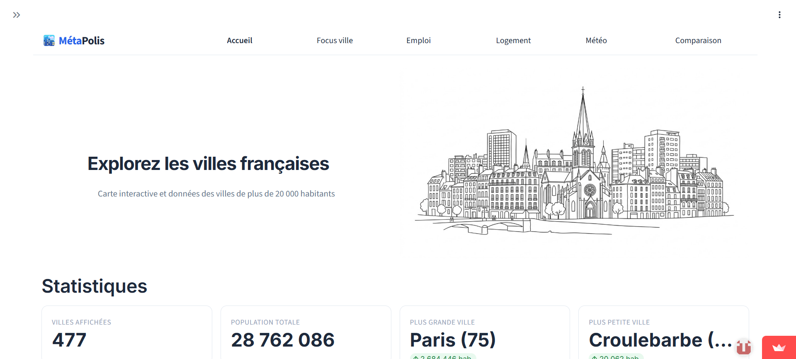
Data Visualization Web
Application interactive d'exploration et de comparaison des villes françaises de plus de 20 000 habitants sous Python/Streamlit. Utilisation des données INSEE et intégration d'une IA Mistral avec interface vocale.

Outil de Reporting
Conception d'une application automatisée de gestion des notes universitaires en Excel/VBA. Intégration de tableaux de bord interactifs pour simplifier les saisies et automatiser les délibérations des jurys.
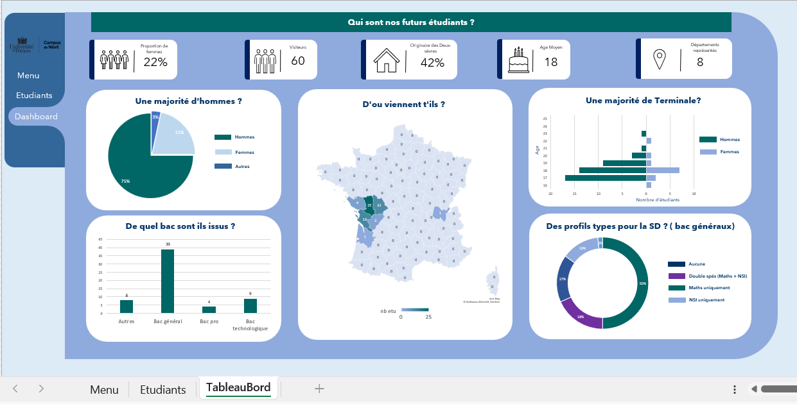
Application Excel / Google Sheets
Création d'une application de gestion d'événements pour le département SD, conçue sous Excel/VBA et migrée vers Google Sheets (Apps Script). Automatisation des formulaires de saisie et des bases de données.
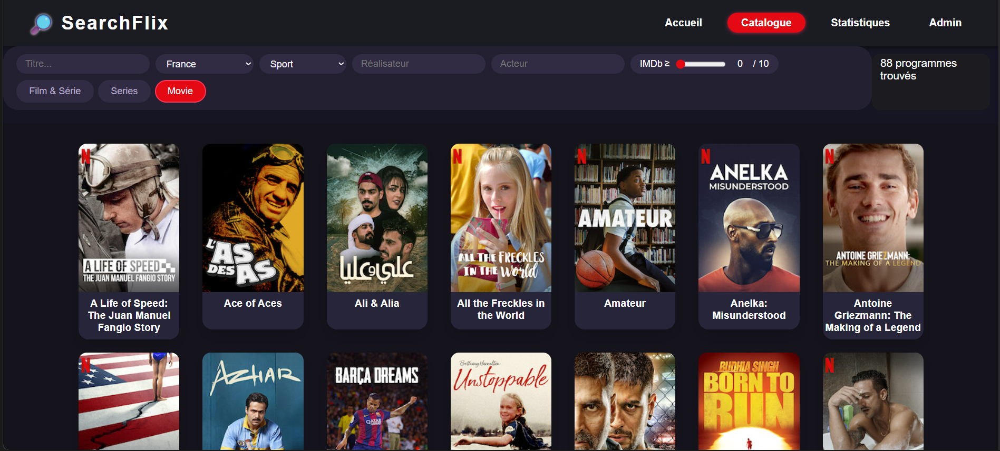
Vizualisation Web : Données Kaggle
Moteur de recherche et d'exploration de films inspiré de la plateforme Netflix. Requêtage dynamique (php, chart.js) et filtres de recherche basés sur un jeu de données Kaggle.
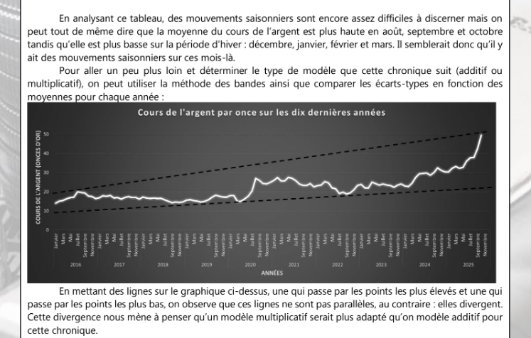
Analyse prédictive du cours de l'argent
Analyse et modélisation des cours de l'argent à partir des données historiques du FMI pour anticiper les tendances à l'horizon 2026. Décomposition de séries temporelles pour isoler la tendance et la saisonnalité.
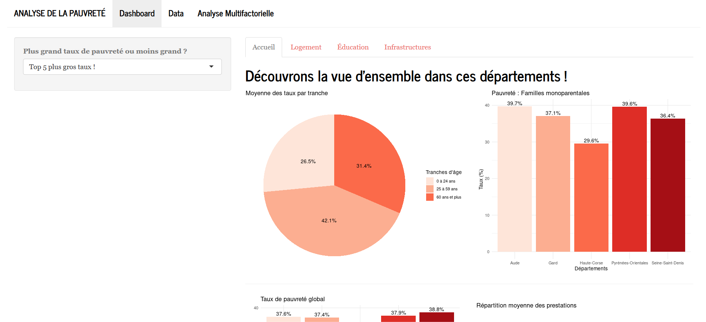
Application R Shiny
Développement d'une application web interactive sous R Shiny dédiée à la visualisation de données complexes. Intégration de graphiques dynamiques pour l'exploration statistique en temps réel.

Gestion de fichiers
Développement d'un script Python pour automatiser la conversion de fichiers JSON volumineux en formats CSV structurés. Gestion de structures de données complexes, formatage de dates et application des règles métiers du client.

Analyse exploratoire
Étude statistique sur les habitudes sportives des étudiants à l'aide d'un questionnaire conçu sous Sphinx. Analyse de 375 réponses et création de tableaux de bord de synthèse pour en dégager des tendances comportementales.

Données en entreprise
Étude statistique approfondie des résultats des élections législatives à partir de données de l'INSEE. Élaboration d'indicateurs socio-économiques et réalisation d'analyses statistiques descriptives avancées (quartiles, moyennes, effets de structure).

Analyse AcVC
Étude approfondie sur les accidents de la vie courante (AcVC). Nettoyage de données brutes complexes sous Python et développement d'un tableau de bord interactif sous Power BI en suivant la méthodologie Agile.

Base de données
Conception et modélisation d'une base de données relationnelle (MCD) SQL pour une coopérative de sel. Développement d'une interface graphique de gestion et de requêtage en Python avec Tkinter.

Estimation statistique
Estimation de la population de la région Île-de-France par des méthodes d'échantillonnage statistique sous R. Analyse de la précision des résultats et calcul d'intervalles de confiance rigoureux.
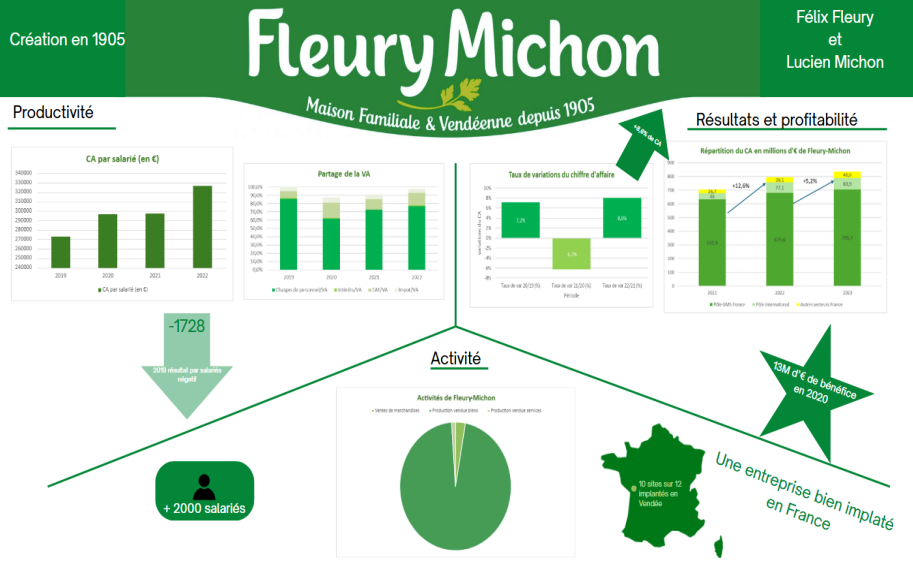
Indicateurs de performance (Fleury-Michon)
Analyse et modélisation des indicateurs de performance logistique pour l'entreprise Fleury-Michon. Conception de tableaux de bord décisionnels pour optimiser le suivi des flux de production.
Bilans annuels
Bilan de ma deuxième année en BUT SD 2025-2026
Cette deuxième année a été marquée par une montée en compétences majeure, me permettant de consolider mes connaissances sur l’ensemble de la chaîne de traitement de la donnée (de la collecte et du stockage à la visualisation et la modélisation statistique).
Ce fut également l’occasion de faire mes premiers pas dans le monde professionnel grâce à un stage de 3 mois chez Libon à Bordeaux, en tant que Data Analyst. Au sein de cette entreprise, j’ai découvert un mode de fonctionnement professionnel agile et j'ai eu la chance de participer activement à un projet d’envergure. Cette immersion m'a permis de mobiliser concrètement les compétences acquises durant ma formation universitaire, tout en me formant de manière autonome au fil de l’eau pour répondre précisément aux problématiques réelles de l’entreprise.
Bilan de ma première année en BUT SD 2024-2025
Après un parcours classique avec un bac général, cette première année universitaire a constitué ma toute première expérience dans l’enseignement supérieur. C’est donc un moment important d’adaptation et de découverte, et je peux dire aujourd’hui que je m’épanouis pleinement dans cette formation.
Dès le début, j’ai été séduit par l’approche pédagogique concrète et appliquée du BUT Sciences des Données. L’alternance entre théorie et projets pratiques m’a permis de comprendre rapidement l’importance et l’utilité des compétences que j’acquiers.
En conclusion, cette première année en BUT Science des Données a été une expérience très positive et formatrice. Elle m’a permis de construire des bases solides, de confirmer mon intérêt pour le traitement des données et de me projeter avec enthousiasme dans la suite de mon parcours.